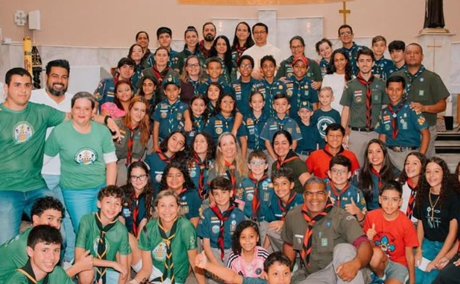

Crianças de 6 a 10 anos.
- Início
- Quem somos
Quem somos
Formando cidadãos pelo escotismo desde 2018.
Somos o 455º Grupo Escoteiro Fortaleza de Itaipu, de Praia Grande/SP. Nossa missão é desenvolver crianças e adolescentes de forma integral, com aventura, amizade e valores para a vida.

Fundação do grupo
Canto do Forte, Praia Grande/SP
No brasão, a flor-de-lis escoteira e o lema Sempre Alerta se unem à silhueta da fortaleza e às ondas.
Nossa história
Nascemos no Canto do Forte.
O 455º Grupo Escoteiro Fortaleza de Itaipu foi fundado em 22 de abril de 2018, no Canto do Forte, em Praia Grande, no litoral paulista.
Desde então, o grupo reúne crianças, jovens e adultos voluntários em torno de uma ideia simples: aprender fazendo, ao ar livre e em equipe, para crescer por inteiro e servir à comunidade.
Como todo grupo escoteiro, funcionamos pelo voluntariado. Cada atividade existe porque adultos dedicam o seu tempo a acompanhar e inspirar os jovens.
Uma missão compartilhada
O que nos move.
Promover valores como liderança, trabalho em equipe, respeito pela natureza e cidadania, desenvolvendo crianças e adolescentes de forma integral.
Liderança
Iniciativa, responsabilidade e coragem para decidir e guiar.
Trabalho em equipe
Patrulhas, alcateias e projetos em que cada pessoa contribui.
Respeito pela natureza
Vida ao ar livre e cuidado com o meio ambiente.
Cidadania
Servir à comunidade e agir por um mundo melhor.
Valores escoteiros
Lealdade
Fidelidade à palavra dada, ao grupo e aos amigos.
Amizade
Companheirismo que une jovens de todas as idades.
Ajuda ao próximo
Servir a quem precisa, sem esperar nada em troca.
Respeito ao meio ambiente
Cuidar da natureza que nos recebe em cada atividade.
Para cada fase
Conheça os ramos do grupo.
Cada ramo tem atividades pensadas para a idade e para o momento de vida dos jovens. Escolha um para ver os detalhes.
Ramo Lobinho · 6 a 10 anos
Descobrir o mundo, brincando.
É nessa fase que as crianças estão prontas para explorar o mundo, aprender novas habilidades e fazer amigos.
Quero me inscreverO ramo é inspirado no “Livro da Jângal”, de Rudyard Kipling. Mergulhando na jornada de Mowgli, as crianças dão os primeiros passos no escotismo, de um jeito educativo e divertido.
Na Alcateia, os Lobinhos deixam as telas de lado e entram em um mundo de vivências práticas, desenvolvendo pilares para a vida toda: respeito, amizade, trabalho em equipe e cuidado com a natureza.
Ramo Escoteiro · 11 a 14 anos
Autonomia, liderança e responsabilidade.
Nesse estágio, a ênfase está em desenvolver a autonomia, a liderança e a responsabilidade dos jovens.
Quero me inscreverJovens de 11 a 14 anos.
Acampamentos mais longos, expedições e projetos comunitários que envolvem planejamento. É a chance perfeita para liderar e explorar interesses pessoais.
Os jovens são desafiados a enfrentar situações que estimulam a superação de limites, a construção da autoconfiança e o desenvolvimento do caráter.
As atividades giram em torno de valores escoteiros como lealdade, amizade, ajuda ao próximo e respeito pelo meio ambiente.
Ramo Sênior · 15 a 17 anos
Da adolescência para a vida adulta.
Uma fase de transição. O objetivo é apoiar os jovens nesse processo, com desafios, aprendizados e oportunidades de crescimento pessoal e coletivo.
Quero me inscreverJovens de 15 a 17 anos.
Atividades diversificadas: aventuras ao ar livre, acampamentos mais desafiadores, trilhas, projetos de impacto social e desenvolvimento de habilidades práticas.
Uma abordagem mais ampla e profunda. Os jovens têm mais autonomia para organizar e planejar as atividades e são incentivados a tomar decisões e assumir responsabilidades de liderança.
Isso desenvolve liderança, gestão de projetos, resolução de conflitos e tomada de decisões.
Ramo Pioneiro · 18 a 23 anos
Projeto de vida e serviço à comunidade.
O último ramo do escotismo prepara os jovens para a vida adulta, com protagonismo, cidadania e a alegria de servir.
Quero me inscreverJovens de 18 a 23 anos, reunidos em uma equipe chamada Clã Pioneiro.
Os próprios jovens escolhem, planejam e realizam projetos e atividades, em campos como serviço, aventura e viagem. O lema do ramo é “Servir”.
O foco está na integração social e na construção de um projeto de vida. Os pioneiros exercitam a cidadania e assumem responsabilidades próprias de adultos por meio do serviço à comunidade, ampliando a visão de mundo.
Quer saber em qual ramo se encaixa? Use o buscador de ramo por idade.
Vamos conversar?
A próxima aventura pode começar hoje.
Preencha o formulário de interesse, chame no WhatsApp ou mande um e-mail. A equipe do 455º GE responde para você.
Praia Grande · São Paulo